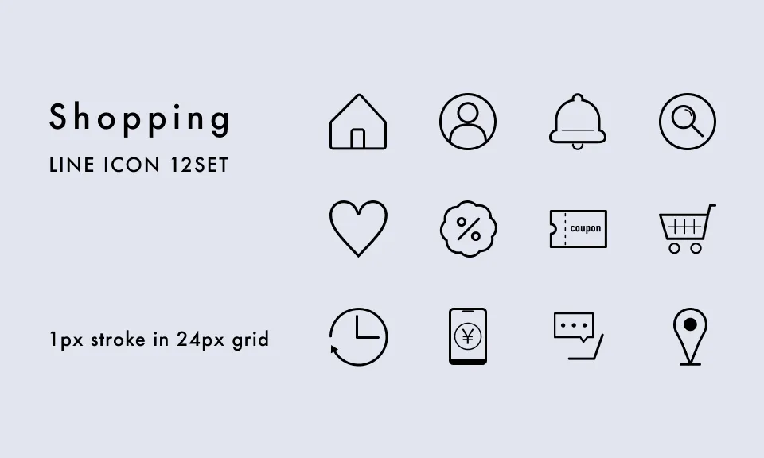

架空のショッピングサイトで利用されることを想定して作成したアイコンです。
左上から
ホーム、ユーザーアカウント、お知らせ、検索
お気に入り商品、セール、クーポン、カート
閲覧履歴、お支払い方法、サポート、店舗検索
を表しています。
Figma共有URL
担当
デザイン、アイコン制作
使用ツール
Illustrator / Figma
制作期間
約4時間
工夫した点
線端や角の形状は丸、メインの線の太さは1pxで統一し、柔らかい雰囲気でまとまりが出るようにデザインしました。
またアイコンは小さいサイズで使われることが多いと想定し、シンプルなデザインを意識し、直感でどんな操作・意味を表しているのか分かりやすいように作成しました。
その他にもデザイン崩れが起きないようパス、文字共にアウトライン化しています。